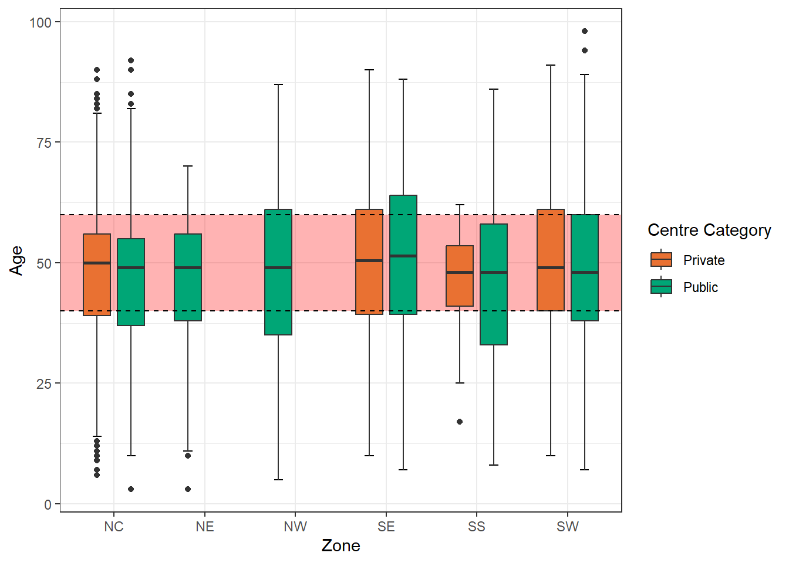
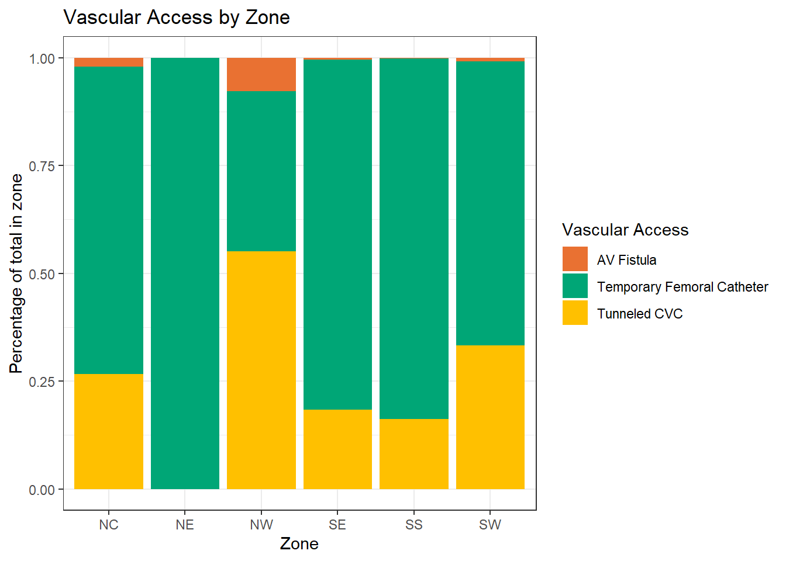

# Loading the necessary packages
library(tidyverse)
library(gtsummary)
library(gt)
library(ggplot2)
library(survival)
library(survminer)
library(sf)
library(ggspatial)
library(prettymapr)
library(labelled)
# Loading the data
rr_data <- read_csv('rr_data.csv', trim_ws = T)The Landscape of Renal Replacement Therapy in Nigeria | 2022 - 2023
A project of the renal registry committee of the Nigerian Association of Nephrologists
Analysis
Summary Statistics
Loading necessary packages and loading the data
Selecting the necessary columns for my analysis and enforcing data types
Adding necessary columns
Forcing data types to ease analysis
rr_data_new <- rr_data %>%
select(c(Sex, Age, Zone, State, `Centre Category`, `First Modality`, `Vascular Access`, DM, HBV, HIV, HCV, Outcome, `Date of Diagnosis`, `Date of Death or Transplant`))
# Creating labels for my table columns
col_labels <- c('Sex', 'Age(years)','Geopolitical Zone', 'State', 'Facility Type', 'First Modality','Vascular Access', 'DM Status', 'HBV Status', 'HIV Status', 'HCV Status', 'Outcomes', 'Date Diagnosed', 'Date of Death or Transplant')
rr_data_new <- set_variable_labels(.data = rr_data_new, .labels = col_labels)
rr_data_new <- rr_data_new %>%
mutate('Age Group' = case_when(Age < 20 ~ 'Less than 20',
Age >= 20 & Age <= 45 ~ '20 to 45',
Age > 45 & Age <=65 ~ '46 to 65',
Age > 65 ~ 'Greater than 65')
) %>%
mutate_at(c('Date of Diagnosis','Date of Death or Transplant'), mdy) %>%
mutate_at(c('Sex', 'Age Group', 'Zone', 'Centre Category', 'First Modality', 'Vascular Access', 'DM', 'HBV', 'HCV', 'HIV', 'Outcome'), as.factor)
head(rr_data_new)# A tibble: 6 × 15
Sex Age Zone State `Centre Category` `First Modality` `Vascular Access`
<fct> <dbl> <fct> <chr> <fct> <fct> <fct>
1 M 73 SW Ekiti Public HD Tunneled CVC
2 M 60 SW Ekiti Public HD Tunneled CVC
3 F 35 SW Ekiti Public HD Temporary Femoral …
4 M 48 SW Ekiti Public HD Tunneled CVC
5 M 46 SW Ekiti Public HD Temporary Femoral …
6 M 30 SW Ekiti Public HD Tunneled CVC
# ℹ 8 more variables: DM <fct>, HBV <fct>, HIV <fct>, HCV <fct>, Outcome <fct>,
# `Date of Diagnosis` <date>, `Date of Death or Transplant` <date>,
# `Age Group` <fct>Re-level factor variables to make sense of the data
rr_data_new <- rr_data_new %>%
mutate(`Age Group` = fct_relevel(`Age Group`, 'Less than 20','20 to 45','46 to 65', 'Greater than 65'),
DM = fct_relevel(DM, 'Yes', 'No'),
HIV = fct_relevel(HIV, 'Pos', 'Neg'),
HBV = fct_relevel(HBV, 'Pos', 'Neg'),
HCV = fct_relevel(HCV, 'Pos', 'Neg'),
Outcome = fct_relevel(Outcome, 'Dead', 'Alive', 'Transplant')
)Below is the summary table of the patient’s demographics
#tbl_summary(rr_data_new,
# include = c(Sex, Age, `Age Group`, Zone, `Centre Category`),
# statistic = list(
# all_continuous() ~ '{median} ({p25}, {p75})',
# all_categorical() ~ '{n} ({p}%)'
# ),
# digits = list(
# all_categorical() ~ c(0, 1),
# all_continuous() ~ c(1,1)
# )
# ) %>%
# modify_header(label ~ '**Variables**') %>%
# modify_caption('**Table 1 Sociodemographic Characteristics of Patients**') %>%
# bold_labels() %>%
# as_gt() %>%
# cols_width(everything() ~ px(250))
# )Geographical Distribution of Patients (using the UN human data Nigerian shape file)
# Bring in the UN human data Nigerian shape file and merge/join with the relevant summary in the data
nigeria <- read_sf('nga_admbnda_adm1_osgof_20190417.shp')
# Creating a summary of all states with patient's number
pts_geog_distr <- rr_data_new %>%
group_by(State) %>%
summarise(pts_per_state = n()) %>%
ungroup()
head(pts_geog_distr)# A tibble: 6 × 2
State pts_per_state
<chr> <int>
1 Abia 116
2 Akwa Ibom 201
3 Borno 86
4 Cross River 135
5 Delta 84
6 Ebonyi 79# Confirm columns in State are similar to ADM1_EN
anti_join(pts_geog_distr, nigeria, by = c('State' = 'ADM1_EN'))# A tibble: 1 × 2
State pts_per_state
<chr> <int>
1 FCT 937# Only FCT is not named in the same way
# So we will rename FCT in the pts_geog_distr df
pts_geog_distr <- pts_geog_distr %>%
mutate(State = case_when(State == 'FCT' ~ 'Federal Capital Territory',
TRUE ~ State)
)
pts_geog_distr# A tibble: 25 × 2
State pts_per_state
<chr> <int>
1 Abia 116
2 Akwa Ibom 201
3 Borno 86
4 Cross River 135
5 Delta 84
6 Ebonyi 79
7 Ekiti 103
8 Enugu 275
9 Federal Capital Territory 937
10 Imo 14
# ℹ 15 more rows# Now safely combine both with a left join
map_data <- left_join(nigeria, pts_geog_distr, by = c('ADM1_EN' = 'State'))Below is the map of Nigeria showing the state-level geographical distribution of patients who underwent RRT in 2022 - 2023
#compute cenntroids for states label
state_centroids <- map_data %>%
mutate(centroid = st_centroid(geometry)) %>%
mutate(long = st_coordinates(centroid)[,1],
lat = st_coordinates(centroid)[,2])
# Now plot the map
map_data %>%
ggplot(aes(fill = pts_per_state)) +
geom_sf()+
geom_point(data = state_centroids, aes(x = long, y = lat))+
geom_text(data = state_centroids, aes(x = long, y = lat, label = ADM1_EN),
size = 3, color = "black", nudge_y = -.2) +
scale_fill_gradient(
low = "#d8f3dc", high = "#00A676", na.value = "grey90")+
labs(
title = "Geographical distribution of patients by State",
caption = "Nigerian shapefile: gotten from humandata.org"
) +
theme_bw()Patient’s Distribution by Facility Type and Zone
Below is the patient distribution by facility category and zone
rr_data_new %>%
group_by(Zone, `Centre Category`) %>%
summarise('No of Patients' = n()) %>%
ggplot(aes(x = Zone, y = `No of Patients`, fill = `Centre Category`, width = .7))+
geom_bar(stat = 'identity', position = position_dodge(width = 0.75, preserve = "single"))+
scale_fill_manual(values = c("Private" = "#E97132", "Public" = "#00A676")) +
labs(title = '')+
theme_bw()Age Distribution by Zone and Category
ggplot(data = rr_data_new, aes(x = Zone, y = Age, fill = `Centre Category`))+
stat_boxplot(geom = "errorbar",
position = position_dodge(width = 0.75, preserve = "single"),
width = 0.2
)+
annotate("rect", xmin = -Inf, xmax = Inf, ymin = 40, ymax = 60,
fill = "#FF0000", alpha = 0.3) +
geom_boxplot(position = position_dodge(width = 0.75, preserve = "single"), width = .6)+
scale_fill_manual(values = c("Private" = "#E97132", "Public" = "#00A676"))+
geom_hline(yintercept = 60, linetype = 'dashed')+
geom_hline(yintercept = 40, linetype = 'dashed')+
theme_bw()
Patients Distribution by Sex and Zone
rr_data_new %>%
ggplot(aes(x = Zone, fill = Sex))+
geom_bar(position = 'dodge')+
scale_fill_manual(values = c("F" = "#E97132", "M" = "#00A676"))+
geom_text(stat = "count", aes(label = after_stat(count)),
position = position_dodge(width = 0.9),
vjust = -0.5)+
theme_bw()
Temporal Trends in Kidney Failure Pattern
Below shows the visualization of the temporal trends in RRT in Nigeria (2022 - 2023)
# Aggregrate dataframe to show monthly trends
rr_data_new %>%
mutate(monthly_rrt = floor_date(`Date of Diagnosis`, unit = 'months')) %>%
group_by(monthly_rrt) %>%
summarise(monthly_rrt_pts = n()) %>%
filter(monthly_rrt >= ymd('2022-01-01') & monthly_rrt < ymd('2024-01-01')) %>%
ggplot()+
geom_vline(xintercept = ymd('2022-03-01'), width = .1, color = 'red',
linetype = 'dashed')+
geom_vline(xintercept = ymd('2022-09-01'), width = .1, color = 'red',
linetype = 'dashed')+
geom_vline(xintercept = ymd('2023-03-01'), width = .1, color = 'red',
linetype = 'dashed')+
geom_vline(xintercept = ymd('2023-09-01'), width = .1, color = 'red',
linetype = 'dashed')+
annotate('text',x = ymd('2022-06-01'), y = 650, label = 'Dry Season', size = 3.5)+
annotate('text',x = ymd('2022-12-01'), y = 650, label = 'Wet Season', size = 3.5)+
annotate('text',x = ymd('2023-06-01'), y = 650, label = 'Dry Season', size = 3.5)+
geom_line(aes(x = monthly_rrt, y = monthly_rrt_pts), color = "#00A676", width = 2)+
labs(title = 'Temporal trends in Renal Failure Incidence',
x = 'Monthly Trend',
y= 'No of Patients')+
theme_bw()
Vascular Access (Overall and by Zone)
# Overall Vascular Access
rr_data_new %>%
filter(`Vascular Access` %in% c('AV Fistula','Temporary Femoral Catheter',
'Tunneled CVC')) %>%
select(`Vascular Access`) %>%
group_by(`Vascular Access`) %>%
summarise(count = n(),
`%Vascular Access` = paste0(round((count/4850)*100, 1),'%'))# A tibble: 3 × 3
`Vascular Access` count `%Vascular Access`
<fct> <int> <chr>
1 AV Fistula 102 2.1%
2 Temporary Femoral Catheter 3228 66.6%
3 Tunneled CVC 1520 31.3% rr_data_new %>%
filter(`Vascular Access` %in% c('AV Fistula','Temporary Femoral Catheter',
'Tunneled CVC')) %>%
ggplot(aes(x = Zone, fill = `Vascular Access`)) +
geom_bar(position = 'fill')+
scale_fill_manual(values = c("AV Fistula" = "#E97132",
"Temporary Femoral Catheter" = "#00A676",
"Tunneled CVC" = "#FFC000"))+
labs(title = 'Vascular Access by Zone',
y = 'Percentage of total in zone')+
theme_bw()Health Outcomes (by Zone)
rr_data_new %>%
filter(Outcome %in% c('Dead','Transplant','Alive')) %>%
ggplot(aes(y = Zone, fill = Outcome)) +
geom_bar(position = 'fill')+
scale_fill_manual(values = c("Dead" = "#E97132",
"Alive" = "#00A676",
"Transplant" = "#FFC000"))+
labs(title = 'Outcomes by Zone',
x = 'Percentage of total in zone')+
theme_bw()
Survival Analysis of Various Factors influencing Time to death
# Extract df for sample survival analysis for variable HIV
HIV_survival_data <- rr_data_new %>%
filter(`Date of Diagnosis` > ymd('2022-01-01') &
`Date of Diagnosis` %--% `Date of Death or Transplant`/days() > 0 ) %>%
filter(HIV %in% c('Pos', 'Neg')) %>%
mutate(`HIV status` = case_when(HIV == 'Neg'~ 0,
HIV == 'Pos'~ 1),
days = `Date of Diagnosis` %--% `Date of Death or Transplant`/days(),
`death status` = case_when(Outcome == 'Dead' ~ 1,
Outcome %in% c('Alive','Transplant') ~ 0)) %>%
select(days, `HIV status`, `death status`)Hazard Ratios
Key Findings and Discussion
Kindly check the .ppt PowerPoint slides and report for details